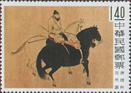
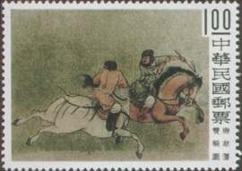
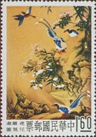
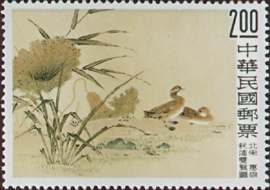
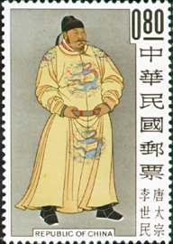
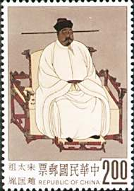
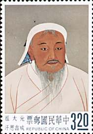
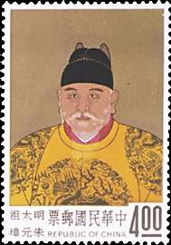

Paintings From the Palace Museum, 7th - 11th Centuries
(Issue of 1960)
Issue date: August 4, 1960. Perforation: 13. Sheet composition: 5x10 or 10x5. Dimensions (mm): 51 x 36 or 36 x 51. Process: Photogravure. Paper: Photogravure stamp paper Printer. Printing Bureau of the Ministry of Finance, Japan.
The Chinese paintings have won the world-wide admiration. Famous paintings from various periods, kept in the National Palace Museum, are considered as Chinese national treasures. In order to acquaint the public with the early Chinese culture through its ancient paintings, a first set of postage stamps was issued in 1960. Four ancient Chinese painting masterpieces were selected among those conserved in the Palace Museum collection. Please notice that this set appeared five years after the first big formatted Japan stamps set, but one year earlier than the Art Series of France.
 |
 |
$1.00. Two Riders, by Wei Yen (AD 7th to 8th century, during the Tang
Dynasty). The original painting is on silk and measures 44.5 x 31 mm.
$1.40. Two Horses and a Groom, by Han Kan (AD 8th century , during Tang
Dynasty). The original painting is on silk and measures 34.1 x 27.5 mm.$1: Cloud-running Steed. Sheet of four stamps, 3
from first set, one from the second.
 |
 |
$1.60. Flowers and Birds, by Hsiao Yung (AD 10th to 11th century). The
original painting is a hanging silk scroll and measures 83 x145 mm.
$2.00. A Pair of Mandarin Ducks in an Autumn Rivulet, by Monk Hui Chung of
Northern Sung Dynasty (960-1126). The original painting is on paper and measures
26.4 x 27.4 mm.
Chinese Emperors (AD 960 -
1398)
(Issue of 1962)
Issue date: September 20, 1962. Perforation: 11 1/2. Sheet composition: 10 x 5. Dimension (mm): 35.5 x 51.5. Process: Photogravure. Photographer: Liu Pao-chin. Paper: Photogravure stamp paper. Printer: Hélio Courvoisier S.A., Switzerland.
In order to popularize Chinese historical culture and to deepen the appreciation of and to spread more widely information about the masterpieces of Chinese art, the Taiwanese Postal Administration issued another set of Ancient Chinese Paintings from the Palace Museum Postage Stamps in 1962. The central designs are four painted portraits of famous Emperors of Tang, Sung, Yuan, and Ming dynasties respectively, selected from the National Palace Museum collection. Detailed descriptions follow.
 |
 |
 |
 |
$0.80. Emperor T'ai Tsung of the Tang dynasty (Li Shih-min). Li Shih-min (AD
reigning 627-649) was the second emperor of the great Tang Empire. The original
painting is a hanging silk scroll measuring 126.8 x 271 mm. The painter is
unknown.
$2.00. Emperor T'ai Tsu of the Sung dynasty (Chao K'wang-yin). Chao K'wang-yin
(reigning AD 960-975) was the first emperor of the Sung dynasty. The painting
was drawn on silk, measuring 169.7 x 191 mm. The painter is unknown.
$3.20. Emperor T'ai Tsu of the Yuan dynasty (Genghis Khan).
Emperor T'ai Tsu of the Yuan dynasty was a world famous Mongol, who ruled his
mighty empire as Gengh is Khan between AD 1206-1227. The original painting was
drawn on silk, measuring 47 x 59.4 mm. The painter is unknown.
$4.00. Emperor T'ai Tsu of the Ming dynasty (Chu Yuan-chang). Chu Yuan-chang
(reigning AD 1368-1398) was the founder of the Ming dynasty. The original
painting was drawn on silk, measuring 51.8 x 63.7 mm. The painter is unknown.